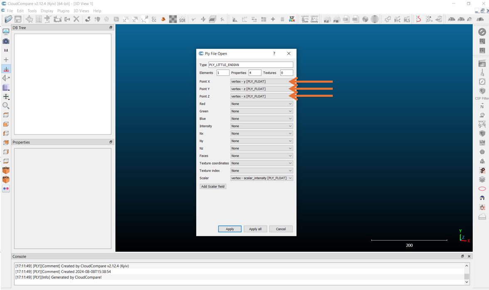
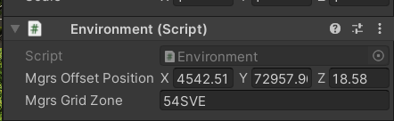
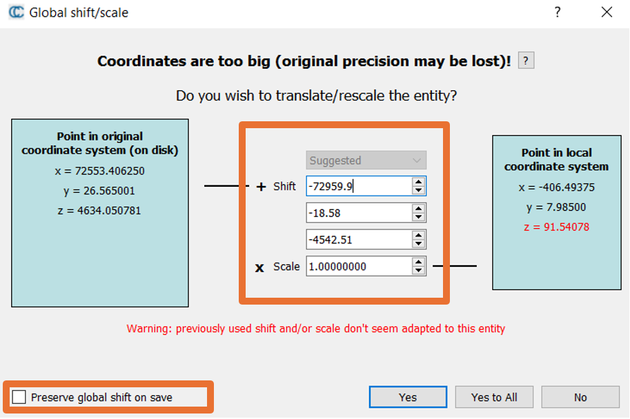
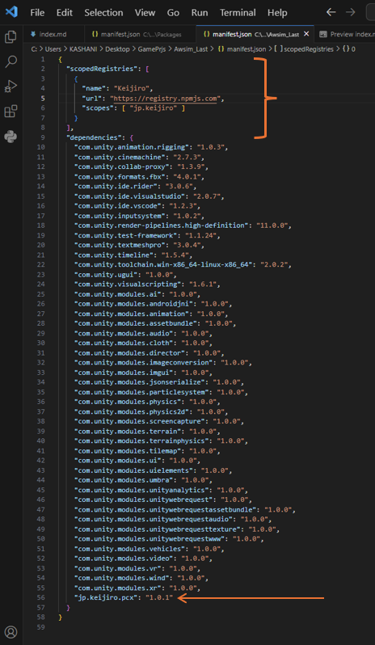
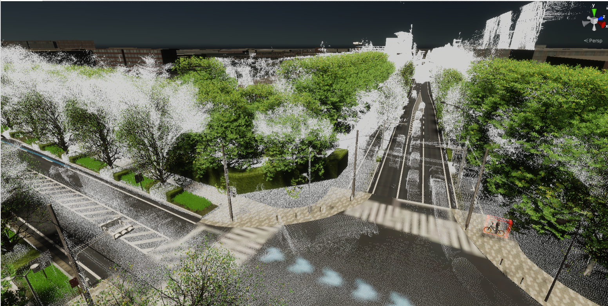
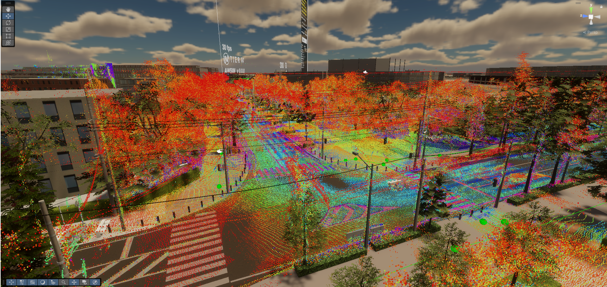

Loading PCD Files in Unity
Loading Point Cloud Data (PCD) files into Unity can be challenging and often requires a paid solution. In this project, we've utilized the Pcx repository available on GitHub. However, it's important to note that Pcx is primarily designed to work with .ply files. We recommend using CloudCompare to convert .pcd files to .ply. In the initial step, simply open the .pcd file and make sure not to change anything related to the position of the points.
Conversion Process in CloudCompare
The first challenge of importing a PCD file into Unity is correcting the dimensions. You must apply the following transformation in the opening window when you import your file in CloudCompare.

Note : Sometimes, you may not find a similar opening. In this case, first save your model as a PLY file using CloudCompare, then load the PLY file again and continue with the steps below.
When loading a PCD file into CloudCompare, pay close attention to the XYZ transformations, as illustrated below:

Ensure that you accurately fill out the input fields based on your data:

After configuring the transformations, save the file in the .ply binary format.
Integrating .PLY Files into Unity
To use the converted .ply files in Unity, you will first need to install PCX. Begin by locating the manifest.json file in the Unity project’s Packages folder.

Note : After importing the model into Unity, you need to set the X scale to -1, so the model aligns exactly in the correct position.
Once PCX is installed, you can drag and drop the .ply files into your Unity environment. However, for optimal performance, it is advisable to clean up previously added project files. This practice ensures a smoother engine performance and enhances the quality and placement of 3D models prior to conducting simulation tests.

Point Cloud with Color
You can preserve or generate colors for your point cloud before exporting to .ply by using CloudCompare. PCX will read vertex colors automatically from the .ply, so there’s no need to assign a material in Unity for basic color display.
1) Start from your PCD (or PLY) in CloudCompare
- Open the file and apply the same XYZ transform rules described earlier (don’t re-center unless your pipeline requires it).
- Verify in the Properties panel whether the cloud already has Colors (RGB) and/or Scalar Fields (e.g., intensity, elevation).
2) If your data already contains RGB
- Confirm that Colors are present and look correct in the 3D view.
- (Optional) Improve legibility:
- Edit → Colors → Enhance RGB (contrast/brightness)
- Edit → Colors → Saturate colors (avoid over-saturation)
- Keep coordinates unchanged to avoid extra flips later in Unity.
3) If Your Data Has No RGB — Generate Colors from a Scalar Field
If your point cloud lacks native RGB values, you can colorize it using scalar fields such as intensity, elevation (Z), classification, or distance.
CloudCompare provides several built-in methods to visualize and export these as actual colors in your .ply.
🟩 Option A — Color by Height (Z-axis)
This is the fastest and most intuitive method for topographic or structural data.
- Select your cloud in the DB tree.
- Go to Edit → Colors → Height Ramp.
- In the pop-up, adjust the Min/Max height range to fit your dataset.
- Choose a color ramp (e.g., “Blue to Red”, “Jet”, or “Rainbow”).
- Confirm and view the gradient applied from low to high elevation.
Tip: This is great for terrain, buildings, and scans where height variation is meaningful.
🟨 Option B — Color by Intensity or Any Scalar Field
For LiDAR or scanner data, intensity or reflectance fields can give visual cues about surface materials.
- Ensure your cloud contains a scalar field (e.g., Intensity).
- You can verify this in the Properties panel — look for a drop-down labeled Scalar field.
- Set it active via: Edit → Scalar fields → Set as active (or use the SF toolbar menu).
- Visualize the range with the Color Scale bar on the right:
- Adjust Min/Max values to avoid washed-out or oversaturated regions.
- Experiment with linear, logarithmic, or custom gradients.
- Once satisfied, convert it to real RGB colors:
- Edit → Colors → Convert SF to RGB.
- (Optional) Fine-tune colors again and repeat the conversion if you modify the scale.
🎥 Video Reference
If you’d like a step-by-step demonstration of this process, watch the video below.
It shows how to apply color ramps, adjust scalar ranges, and export the result as a colored .ply file.

🟦 Option C — Color by Classification or Segments
When working with classified LiDAR data or segmented point clouds (e.g., ground, vegetation, buildings), assign unique colors per class.
- If a classification field exists, make it active:
Edit → Scalar fields → Set as active → choose Classification. - Apply a color scheme:
- Edit → Colors → Convert SF to RGB — for class-based palettes, or
- Edit → Colors → Set Unique Colors — to manually differentiate objects.
- Verify that each class or segment now displays a distinct, consistent color.
Use case: Useful for visually inspecting segmented datasets before Unity import.
After applying any of the above methods, confirm the point cloud displays the expected colors in CloudCompare’s 3D view.
You can then proceed to export it as a Binary PLY with the “Save colors” option enabled to preserve your colorization.
Tip: If the colors look washed out, narrow the scalar field’s min/max range so the gradient spans the actual data.
4) Optional: Compute normals (for nicer point visuals)
- Edit → Normals → Compute
- Use KNN with a neighbor count that matches your point density (e.g., 16–32 for dense scans, 8–16 for sparse).
- Normals are not required for color, but can help with round/disk rendering styles.
5) Export with colors to Binary PLY
- File → Save → pick PLY and choose Binary (smaller, faster to load).
